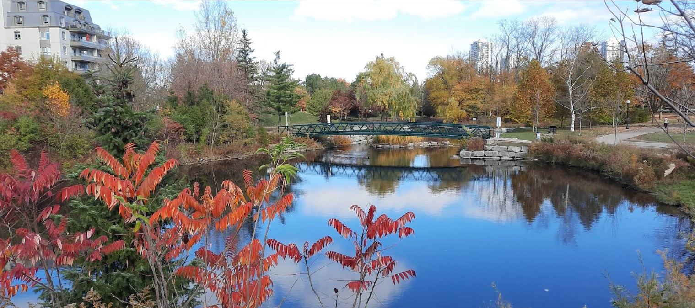
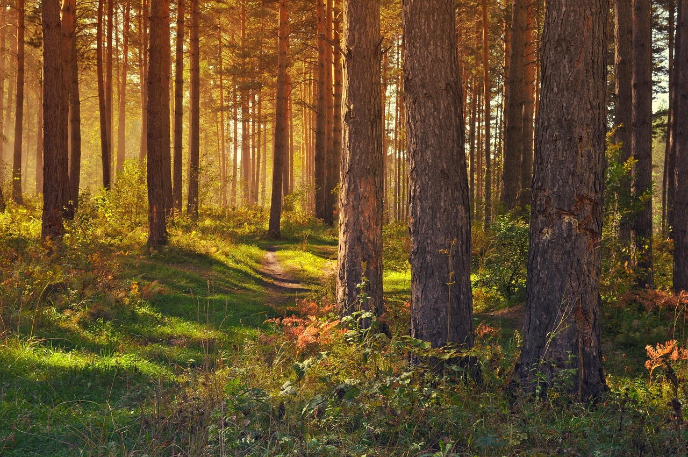

Easy Trails - Beginner Friendly
Perfect for families, beginners, or anyone looking for a peaceful outdoor experience. These trails offer beautiful scenery without challenging terrain.

Iron Horse Trail - Complete Guide
EasyTrail Description
The Iron Horse Trail is a multi-use recreational trail that follows the former Canadian National Railway line. This beautifully maintained paved path stretches across Kitchener and Waterloo, offering a safe and accessible route for pedestrians, cyclists, and inline skaters of all ages and abilities.
5.5 km
Total Length
Paved
Surface Type
Minimal
Elevation Change
Year Round
Accessibility
Key Features
- Fully paved and wheelchair accessible
- Beautiful bridge crossings over creeks and roads
- Connects multiple neighborhoods and parks
- Well-lit sections for evening use
- Multiple access points with parking
- Interpretive signage about local history
Access Points
North Terminus: Northfield Drive (Waterloo)
Central Access: University Avenue, Columbia Street
South Terminus: Fairway Road (Kitchener)
Central Access: University Avenue, Columbia Street
South Terminus: Fairway Road (Kitchener)
What to Bring
- Comfortable walking shoes
- Water bottle
- Camera for scenic bridge views
- Weather-appropriate clothing

Huron Natural Area - Nature's Hidden Gem
ModerateTrail Description
The Huron Natural Area is a 60-hectare natural area featuring diverse ecosystems including wetlands, meadows, and mature forests. This conservation area offers a network of trails that provide an immersive nature experience right in the heart of Kitchener.
3.2 km
Main Loop
Natural
Surface Type
Moderate
Elevation Change
Spring-Fall
Best Season
Trail Features
- Wooden boardwalks through wetland areas
- Diverse wildlife viewing opportunities
- Native plant and tree identification markers
- Multiple trail difficulty options
- Scenic rest areas and observation decks
- Educational signage about local ecosystems
Access Information
Main Entrance: Huron Road (near Huron Village)
Parking: Free parking available at entrance
Hours: Dawn to dusk daily
Parking: Free parking available at entrance
Hours: Dawn to dusk daily
Wildlife You Might See
- Various bird species including herons and hawks
- Small mammals like chipmunks and squirrels
- Amphibians in the wetland areas
- Diverse butterfly and insect populations
Trail Comparison
| Feature | Iron Horse Trail | Huron Natural Area |
|---|---|---|
| Surface | Fully Paved | Natural Paths/Boardwalks |
| Accessibility | Wheelchair Accessible | Limited Accessibility |
| Scenery | Urban/Bridge Views | Forest/Wetlands |
| Wildlife | Urban Birds | Diverse Wildlife |
| Parking | Multiple Locations | Main Entrance Only |